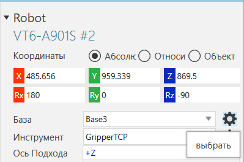
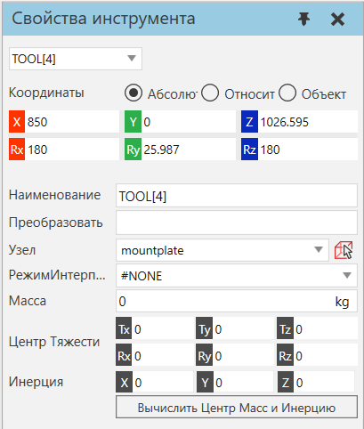

Редактирование координат базы и инструмента |
|
Команда «Переместить» и другие инструменты могут использоваться для редактирования базы робота и рамок инструментов. 1.Нажмите на вкладку Программирование, а затем панель Взаимодействие, выберите базу или инструментальную рамку, которую вы хотите отредактировать. В этом случае автоматически активируется команда «Переместить», и манипулятор в трехмерном мире показывает расположение выбранной рамки. 
 2.Выполните одно или несколько из следующих действий: ·Чтобы привязать базовую или инструментальную рамку к местоположению в трехмерном мире, на вкладке Программирование, в группе Инструменты, нажмите Привязка, а затем привязать выбранную рамку, как если бы это был компонент. ·Чтобы переместить базу или рамку инструмента в 3D-мире, используйте кнопку Переместтить и/или панель Свойства, чтобы переместить выбранную рамку, как компонент. В этом случае система координат объекта может использоваться относительно робительской системы координат или системы координат самого инструмента. ·Чтобы прикрепить к узлу базу или инструментальную рамку, на панели Свойства, нажмите кнопку Узел, а затем в трехмерном мире прикрепите выбранную рамку к узлу, как к компоненту. ·Чтобы определить интерполяцию базовой или инструментальной рамки для таргетинга движения, на панели Свойства, установить Режим интерполяции на предпочтительный вариант. В этом случае вы определяете родительскую систему координат для таргетинга движения и определяете, является ли рамка, используемая в качестве центральной точки инструмента, неподвижным или подвижным. Если базовая или инструментальная рамка не имеет настройки InterpolationMode, которая ссылается на себя или равна #NONE, вы, по сути, используете внешнюю конфигурацию инструмента. ·Чтобы задать интерполяцию базовой или инструментальной рамки для определения движения, на панели Свойства установите Режим интерполяции на предпочтительный. В этом случае вы определяете исходную систему координат для определения направления движения и то, является ли рамка, используемая в качестве центральной точки инструмента, неподвижной или подвижной. Если базовая или инструментальная рамка не имеет параметра Режим интерполяции, который ссылается на саму себя или равен #NONE, вы, по сути, используете внешнюю конфигурацию инструмента. |